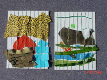
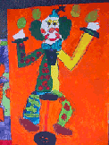
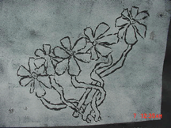
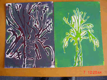
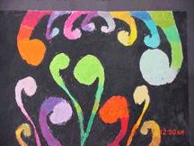

Teacher Professional Development Materials Teacher Professional Development Materials |
Printmaking – Makarewa School, Invercargill
Evaluation/Reflection
The evaluative feedback process from The Arts Online team has been a positive and interactive group effort. The focus of the printmaking was not just on creating works for the school's art exhibition but to learn how best to use the Ministry of Education arts resources, and therefore raise the standard of teaching and learning outcomes.
Feedback from Ann Brodie – The Arts Online visual arts adviser
Hi Diane,
What a neat context. I grew up in Invercargill but hadn't ever heard about this special identity. The prints are a great way to commemorate the existence of the cottage and its owner. I saw, as well as the qualities described, that some students show an awareness of form in the use of an orthogonal line (sloping) on the side of the house and a little overlapping too (especially the fence). Not an easy material to deal with.
Feedback from Carol Langton – The Arts Online manager
Hi Dianne,
Your students' work looks good on the online forum. As Ann says, it's a wonderful and meaningful context with such strong links to the community history and the process of drawing to printmaking.
When I visited the Invercargill art museum I found Jo Ogier's work there and discovered that she had been their artist in residence. They said she was quite happy to take phone calls.
For a useful evaluation exercise, the children could phone or email her some questions and show her their work online like we have done on the October 8, 2004 forum.
Response from Dianne Cowan – teacher
Thank you Carol,
It will be great to have this avenue to follow up on. I'm sure the children would get a thrill out of showing their work to a 'real artist'. Timing is great as we're away to the museum tomorrow. I shall keep you informed of how we get on.
Regards,
Dianne
Reflection from Catherine Gibbs, School Support Services adviser
"Whether we are creators or observers of art, the opportunity for richer and deeper understanding in the arts is nourished by our interaction with professional artists. This early interaction within the community shapes our adult lives.
Professional artists are primary advocates of the authentic experience of creating, making, and experiencing their art form. A curriculum enriched by working with artists opens up new ways of approaching teaching and learning music."
What next
Since this unit, Makarewa School's ongoing commitment to working with Ministry of Education (MOE) resources has resulted in the following class units.
| Ministry of Education arts resources |
Class |
Visual arts focus |
| Exploring the visual arts in years 1–6: Fabric and Fibre.
Heeni Kerekere (pp 7–14) and Bev Christophersen (pp 15–19). |
year 1 and 2 |
weaving unit |
Exploring the visual arts in years 1–6: Painting.
Lindsay Crooks (pp 6–16).
Exploring the visual arts
in years 1–6: Fabric and Fibre. Bev Christophersen (pp
19). |
year 0 and 1 |
crayon and dye, painted and mixed media clowns |
| Exploring the visual arts in years 1–6: Printmaking.
(pg 26). |
years 2, 3, and 4 |
Monoprints – flowers |
| Exploring the visual arts in years 1–6: Printmaking.
Gabrielle Belz (pp 20–25). |
years 2, 3, and 4 |
Printmaking – PVA glue prints of trees in the winter |
| Exploring the visual arts in years 1–6: Painting.
Randal Leach (pp 17–26). |
year 4 and 5 |
koru and koru patterns |
| 
weaving unit
|

painted clowns |

painted clowns |
| 
monoprints |

monoprints |

printmaking- trees |
| 
koru patterns |
References
Ministry of Education (2000). The Arts in the New Zealand Curriculum. Wellington: Learning Media.
Ministry of Education (1997). Social Studies in the New Zealand Curriculum. Wellington: Learning Media.
Ministry of Education (2001). Exploring the Visual Arts in Years 1–6: Printmaking. Wellington: Learning Media.
Ministry of Education (2001). Exploring the Visual Arts in Years 1–6:
Fabric and Fibre. Wellington: Learning Media.
|